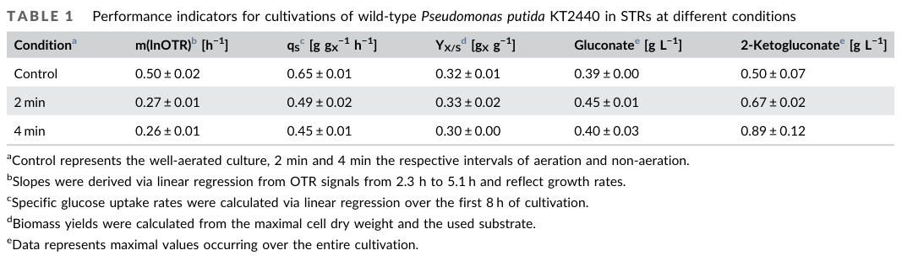

aceA (PP_4116) encodes isocitrate lyase (ICL; EC 4.1.3.1), a cytosolic enzyme of the isocitrate lyase/PEP mutase superfamily that catalyzes the reversible retro-aldol cleavage of isocitrate into succinate and glyoxylate. This is the committed, first step of the glyoxylate shunt (glyoxylate bypass), a branch of the tricarboxylic acid cycle at the isocitrate node that conserves carbon skeletons by bypassing the two oxidative decarboxylation steps of the TCA cycle. Together with malate synthase (GlcB, PP_0356), which condenses the glyoxylate produced by ICL with acetyl-CoA to form malate, the shunt enables net assimilation of two-carbon and acetyl-CoA-yielding substrates into C4 intermediates that feed gluconeogenesis and biomass formation. In Pseudomonas putida KT2440 the enzyme is required for growth on substrates that are catabolized to acetyl-CoA, including many fatty acids and alkanes (e.g. octane/octanoate); glyoxylate-shunt flux is strongly carbon-source dependent and is regulated transcriptionally (e.g. by RccR/HexR-family regulators) and post-translationally.
| GO Term | Evidence | Action | Reason |
|---|---|---|---|
|
GO:0003824
catalytic activity
|
IEA
GO_REF:0000002 |
MODIFY |
Summary: Root-level molecular function term that is correct but uninformative for this well-characterized enzyme.
Reason: aceA is isocitrate lyase (EC 4.1.3.1); the generic 'catalytic activity' term should be replaced by the specific activity, which is independently annotated here (GO:0004451 isocitrate lyase activity).
Proposed replacements:
isocitrate lyase activity
|
|
GO:0004451
isocitrate lyase activity
|
IEA
GO_REF:0000120 |
ACCEPT |
Summary: Core molecular function. aceA/PP_4116 is isocitrate lyase (EC 4.1.3.1), catalyzing cleavage of isocitrate to succinate plus glyoxylate (RHEA:13245).
Reason: Strongly supported by sequence/domain assignment (ICL/PEPM, IPR006254; TIGR01346) and consistent with the literature on the P. putida KT2440 glyoxylate shunt, where aceA induction and aceA-knockout growth phenotypes are observed under acetyl-CoA-yielding carbon sources [PMID:35651318 "aceA knockout failed to grow on octane"; PMID:30200852 "isocitrate lyase cleaves isocitrate into succinate and glyoxylate"].
|
|
GO:0006097
glyoxylate cycle
|
IEA
GO_REF:0000117 |
ACCEPT |
Summary: Core biological process. aceA catalyzes the committed step of the glyoxylate shunt/cycle.
Reason: The glyoxylate shunt in P. putida KT2440 is encoded by aceA (PP_4116, isocitrate lyase) and glcB (PP_0356, malate synthase); transposon disruption of aceA causes serious fitness defects on fatty acids and an aceA knockout cannot grow on octane, confirming the in vivo role in the glyoxylate cycle [PMID:35651318; file:PSEPK/aceA/aceA-deep-research-falcon.md].
|
|
GO:0006099
tricarboxylic acid cycle
|
IEA
GO_REF:0000104 |
MODIFY |
Summary: Over-propagated process term. Isocitrate lyase acts at the isocitrate branch point but is an enzyme of the glyoxylate shunt that bypasses the TCA cycle, not a TCA cycle enzyme.
Reason: The glyoxylate shunt diverts isocitrate away from the oxidative decarboxylation steps of the TCA cycle; ICL does not catalyze a reaction of the canonical TCA cycle [PMID:30200852 "the glyoxylate shunt is a branch of the TCA cycle that diverts carbon away from oxidative decarboxylation"]. The biological process is better captured by glyoxylate cycle (already annotated, GO:0006097). This IEA likely arises from electronic transfer at the shared isocitrate node and should be retargeted rather than retained as TCA cycle.
Proposed replacements:
glyoxylate cycle
|
This report is retrieval-only and is generated directly from Asta results.
search_papers_by_relevance with snippet_search.The research report should be a detailed narrative explaining the function, biological processes, and localization of the gene product. Citations should be given for all claims.
You should prioritize authoritative reviews and primary scientific literature when conducting research. You can supplement
this with annotations you find in gene/protein databases, but these can be outdated or inaccurate.
We are specifically interested in the primary function of the gene - for enzymes, what reaction is catalyzed, and what is the substrate specificity? For transporters, what is the substrate? For structural proteins or adapters, what is the broader structural role? For signaling molecules, what is the role in the pathway.
We are interested in where in or outside the cell the gene product carries out its function.
We are also interested in the signaling or biochemical pathways in which the gene functions. We are less interested in broad pleiotropic effects, except where these elucidate the precise role.
Include evidence where possible. We are interested in both experimental evidence as well as inference from structure, evolution, or bioinformatic analysis. Precise studies should be prioritized over high-throughput, where available.
The requested protein corresponds to Pseudomonas putida KT2440 aceA (ordered locus PP_4116) encoding isocitrate lyase (ICL) of the glyoxylate shunt. A KT2440 functional-genomics thesis explicitly states: “In P. putida, the two steps of the glyoxylate shunt are encoded by PP_4116 (aceA – isocitrate lyase) and PP_0356 (glcB – malate synthase).” (incha2023excavatingthegenome pages 15-18). This matches the UniProt record Q88FI0 provided in the prompt (aceA; PP_4116; EC 4.1.3.1).
The glyoxylate shunt is a branch of the tricarboxylic acid (TCA) cycle that diverts carbon away from oxidative decarboxylation in order to conserve carbon skeletons for biosynthesis (e.g., for gluconeogenesis) during growth on C2 substrates such as acetate. The branchpoint is isocitrate, which can be processed either through oxidative TCA decarboxylation or through the glyoxylate shunt (dolan2018theglyoxylateshunt pages 3-4, dolan2018theglyoxylateshunt pages 1-3).
Isocitrate lyase (ICL; AceA) catalyzes the cleavage of isocitrate into succinate and glyoxylate (a retro-aldol/aldol cleavage reaction) (dolan2018theglyoxylateshunt pages 3-4, dolan2018theglyoxylateshunt pages 10-11). This is the committed step that generates glyoxylate for the shunt (dolan2018theglyoxylateshunt pages 12-14).
The second step of the shunt is catalyzed by malate synthase, which condenses glyoxylate + acetyl‑CoA → malate, enabling net assimilation of acetyl‑CoA carbon into a C4 intermediate that supports gluconeogenesis/biomass formation (dolan2018theglyoxylateshunt pages 3-4).
A central concept is that glyoxylate-shunt flux depends on how carbon is partitioned between ICL (AceA) and isocitrate dehydrogenase (ICD/IDH) at the isocitrate node. In E. coli, ICL typically has much lower affinity for isocitrate than ICD, so ICD must be restrained for glyoxylate-shunt flux to rise (dolan2018theglyoxylateshunt pages 3-4). One canonical mechanism in gram-negative bacteria is AceK, a bifunctional kinase/phosphatase that reversibly phosphorylates and inactivates ICD, shifting flux toward the shunt (dolan2018theglyoxylateshunt pages 3-4, dolan2018theglyoxylateshunt pages 4-6). The same review emphasizes that the “textbook” E. coli model is not universal across bacteria (dolan2018theglyoxylateshunt pages 1-3, dolan2018theglyoxylateshunt pages 17-18).
The glyoxylate shunt can be regulated at multiple layers, including transcriptional regulation and post-translational modifications. A key review summarizes pseudomonad-specific transcriptional control via RccR/HexR-family regulators: RccR is described as regulating central metabolism and glyoxylate shunt genes including aceA and glcB, with regulation modulated by metabolites such as KDPG (dolan2018theglyoxylateshunt pages 12-14). Post-translational regulation via lysine acetylation has also been described as a mechanism that can reduce ICL activity and modulate flux partitioning (dolan2018theglyoxylateshunt pages 12-14).
Direct experimental localization statements for P. putida KT2440 AceA were not captured in the retrieved texts. However, the glyoxylate shunt is discussed as a central metabolic pathway operating at the TCA branchpoint, consistent with a cytosolic enzyme system in bacteria; the review also discusses possible physical association/metabolon-like behavior between ICL and malate synthase to manage glyoxylate (dolan2018theglyoxylateshunt pages 17-18, dolan2018theglyoxylateshunt pages 18-20).
AceA catalyzes:
- Isocitrate → succinate + glyoxylate (dolan2018theglyoxylateshunt pages 3-4, dolan2018theglyoxylateshunt pages 10-11).
The retrieved corpus did not include direct kinetic constants (Km, kcat) for P. putida KT2440 AceA. For context, the authoritative review reports that in E. coli the KM of ICL for isocitrate is ~100× higher than ICD, whereas in mycobacteria the KM differential is ~7× (ICL 145 μM vs IDH 20 μM), highlighting that species-specific enzymology shapes flux partitioning (dolan2018theglyoxylateshunt pages 10-11). This supports caution in transferring kinetic intuition from other taxa to P. putida without direct measurement.
The most strongly supported KT2440-specific functional role for aceA (PP_4116) is enabling assimilation of acetyl‑CoA–generating substrates by routing carbon through the glyoxylate shunt (incha2023excavatingthegenome pages 15-18, borchert2024machinelearninganalysis pages 6-7).
A KT2440 barcoded transposon fitness analysis reports that when grown on fatty acids, bacteria often require the glyoxylate shunt to avoid depleting TCA intermediates, and in P. putida the shunt is encoded by PP_4116 (aceA) and PP_0356 (glcB). Transposon mutants in aceA and glcB show “serious fitness defects (fitness score < −3) when grown on nearly all of the fatty acids tested,” indicating aceA is important for fatty-acid growth in this organism (incha2023excavatingthegenome pages 15-18).
A 2022 study demonstrated that P. putida KT2440 can acquire octane degradation capacity via horizontal acquisition of oct genes. The authors report that octane is oxidized to octanol/octanal/octanoic acid, and that the resulting acetyl‑CoA is assimilated via the glyoxylate shunt; critically, an aceA knockout failed to grow on octane and the study states aceA is required for growth on octane/octanoic acid (duque2022providingoctanedegradation pages 1-1). Proteomics in the same work showed induction of isocitrate lyase (PP_4116) and strong induction of malate synthase, consistent with glyoxylate shunt engagement during alkane assimilation (duque2022providingoctanedegradation pages 8-8).
In an anoxic bio-electrochemical system (BES) using P. putida KT2440, multi-omics data indicated that AceA increased during adaptation (weimer2024systemsbiologyof pages 4-8). The process context included disrupted TCA operation (e.g., markedly reduced succinyl‑CoA), strong suppression of fatty-acid synthesis (malonyl‑CoA ~1000-fold lower), and increased acetyl‑CoA (~20% higher), interpreted as lipid degradation feeding acetyl‑CoA and acetate formation (weimer2024systemsbiologyof pages 4-8). Thus, AceA induction appears as part of central-carbon remodeling under anoxic/electrogenic stress.
Weimer et al. (published Sep 2024) provides quantitative metabolomics/isotopic context for aceA-associated remodeling in KT2440 under electrogenic anoxic cultivation. The work reported 2-ketogluconate (2KG) = 7.9 mM at 88.4% molar yield from glucose, alongside isotopic evidence that acetate and succinate partly derived from biomass (acetate SFL 39.4%; succinate SFL 30.7%) and broad transcriptional remodeling (2,011 genes upregulated at 24 h) (weimer2024systemsbiologyof pages 4-8). AceA is explicitly noted as increased in this adaptive response (weimer2024systemsbiologyof pages 4-8).
URL: https://doi.org/10.1186/s12934-024-02509-8 (Sep 2024) (weimer2024systemsbiologyof pages 4-8)
Borchert et al. (published Mar 2024) used independent component analysis on KT2440 RB-TnSeq fitness compendia and highlighted glyoxylate shunt genes (aceA + glcB) as part of functional modules relevant to catabolism of acetyl‑CoA–generating substrates. The article contextualizes aceA/glcB as required to divert flux toward anaplerotic assimilation when catabolism yields acetyl‑CoA (examples include butanol and acetate) (borchert2024machinelearninganalysis pages 6-7).
URL: https://doi.org/10.1128/msystems.00942-23 (Mar 2024) (borchert2024machinelearninganalysis pages 6-7)
Mutyala et al. (published Jul 2023) examined succinate formation from acetate in microaerobic flask cultivation. While the central engineering focus was citrate synthase (gltA), the study quantified aceA expression and extracellular metabolites consistent with glyoxylate-shunt engagement. In the gltA-overexpressing strain, aceA expression was reported as 0.395-fold (0.5 mM IPTG) and 1.24-fold (1 mM IPTG) relative to WT, with a marked decrease in extracellular α-ketoglutarate and increase in malate (mutyala2023citratesynthaseoverexpression pages 5-7).
URL: https://doi.org/10.1021/acsomega.3c02520 (Jul 2023) (mutyala2023citratesynthaseoverexpression pages 5-7)
In the octane assimilation study, aceA is functionally essential for converting alkane-derived acetyl‑CoA into biomass via the glyoxylate shunt; aceA knockout eliminates growth on octane (duque2022providingoctanedegradation pages 1-1). This provides a clear real-world link between aceA function and hydrocarbon bioconversion.
URL: https://doi.org/10.1111/1758-2229.13097 (Jun 2022) (duque2022providingoctanedegradation pages 1-1)
The BES study is an implementation-relevant case where P. putida KT2440 operates for extended periods under anoxic electrogenic conditions and produces 2KG at high molar yield, with aceA (AceA) increased during adaptation (weimer2024systemsbiologyof pages 4-8). This expands operational modes for P. putida bioprocessing and points to glyoxylate-shunt nodes as potential tuning points under oxygen limitation.
In microaerobic acetate-to-succinate production, modulation of central carbon entry into the TCA/glyoxylate node (via gltA overexpression) coincided with aceA expression changes and metabolite patterns consistent with altered isocitrate node routing (mutyala2023citratesynthaseoverexpression pages 5-7).
The RB-TnSeq ICA analysis argues glyoxylate shunt genes are key for growth on acetyl‑CoA generating substrates and suggests leveraging this pathway (explicitly discussed for glcB, with aceA in the same functional module) as an underutilized engineering strategy for feedstocks producing acetyl‑CoA (e.g., lignin-derived aromatics that yield acetyl‑CoA) (borchert2024machinelearninganalysis pages 6-7).
An authoritative Annual Review in Microbiology emphasizes that glyoxylate shunt regulation is more diverse than the canonical E. coli model and varies across taxa, cautioning against simplistic extrapolation. It also describes multi-layer regulation (transcriptional, AceK-mediated phosphorylation, acetylation, allostery) and highlights that glyoxylate shunt activity affects broader physiological traits in many bacteria (dolan2018theglyoxylateshunt pages 1-3, dolan2018theglyoxylateshunt pages 18-20).
URL: https://doi.org/10.1146/annurev-micro-090817-062257 (Sep 2018) (dolan2018theglyoxylateshunt pages 1-3)
13C flux analysis reported:
- On glucose: no detectable flux through the glyoxylate cycle.
- On fructose: ~4% of flux from isocitrate diverted through the glyoxylate cycle (sudarsan2014thefunctionalstructure pages 7-8).
URL: https://doi.org/10.1128/aem.01643-14 (Sep 2014) (sudarsan2014thefunctionalstructure pages 7-8)
Key quantitative outcomes include:
- 2-ketogluconate: 7.9 mM; 88.4% molar yield (0.88 mol/mol glucose)
- Isotope tracing at 100 h: acetate SFL 39.4%, succinate SFL 30.7%
- Metabolomics: malonyl‑CoA ~1000-fold lower; acetyl‑CoA ~20% higher
- Transcriptome: 2,011 genes upregulated at 24 h (weimer2024systemsbiologyof pages 4-8).
URL: https://doi.org/10.1186/s12934-024-02509-8 (Sep 2024) (weimer2024systemsbiologyof pages 4-8)
URL: https://doi.org/10.1021/acsomega.3c02520 (Jul 2023) (mutyala2023citratesynthaseoverexpression pages 5-7)
The following figure/table provide quantitative context for P. putida KT2440 physiology under oxygen oscillation, relevant to conditions that can perturb central carbon metabolism.
aceA (PP_4116) encodes isocitrate lyase (EC 4.1.3.1), a cytosolic central-metabolic enzyme that catalyzes cleavage of isocitrate to succinate and glyoxylate, enabling the glyoxylate shunt to conserve carbon and assimilate acetyl‑CoA into C4 intermediates for gluconeogenesis and biomass. In P. putida KT2440, aceA is strongly required for growth on many fatty acids (fitness defects < −3 upon disruption) and is essential for growth on octane in an alkane-utilization context, consistent with its anaplerotic role in assimilating β‑oxidation-derived acetyl‑CoA. Recent 2023–2024 studies show condition-dependent engagement of the glyoxylate shunt and aceA-associated remodeling in both acetate-to-succinate bioproduction and anoxic electrogenic bio-electrochemical processing. (incha2023excavatingthegenome pages 15-18, dolan2018theglyoxylateshunt pages 3-4, duque2022providingoctanedegradation pages 1-1, weimer2024systemsbiologyof pages 4-8, mutyala2023citratesynthaseoverexpression pages 5-7)
References
(incha2023excavatingthegenome pages 15-18): MR Incha. Excavating the genome mine of pseudomonas putida kt2440. Unknown journal, 2023.
(dolan2018theglyoxylateshunt pages 3-4): Stephen K. Dolan and Martin Welch. The glyoxylate shunt, 60 years on. Annual review of microbiology, 72:309-330, Sep 2018. URL: https://doi.org/10.1146/annurev-micro-090817-062257, doi:10.1146/annurev-micro-090817-062257. This article has 211 citations and is from a peer-reviewed journal.
(dolan2018theglyoxylateshunt pages 1-3): Stephen K. Dolan and Martin Welch. The glyoxylate shunt, 60 years on. Annual review of microbiology, 72:309-330, Sep 2018. URL: https://doi.org/10.1146/annurev-micro-090817-062257, doi:10.1146/annurev-micro-090817-062257. This article has 211 citations and is from a peer-reviewed journal.
(dolan2018theglyoxylateshunt pages 10-11): Stephen K. Dolan and Martin Welch. The glyoxylate shunt, 60 years on. Annual review of microbiology, 72:309-330, Sep 2018. URL: https://doi.org/10.1146/annurev-micro-090817-062257, doi:10.1146/annurev-micro-090817-062257. This article has 211 citations and is from a peer-reviewed journal.
(dolan2018theglyoxylateshunt pages 12-14): Stephen K. Dolan and Martin Welch. The glyoxylate shunt, 60 years on. Annual review of microbiology, 72:309-330, Sep 2018. URL: https://doi.org/10.1146/annurev-micro-090817-062257, doi:10.1146/annurev-micro-090817-062257. This article has 211 citations and is from a peer-reviewed journal.
(dolan2018theglyoxylateshunt pages 4-6): Stephen K. Dolan and Martin Welch. The glyoxylate shunt, 60 years on. Annual review of microbiology, 72:309-330, Sep 2018. URL: https://doi.org/10.1146/annurev-micro-090817-062257, doi:10.1146/annurev-micro-090817-062257. This article has 211 citations and is from a peer-reviewed journal.
(dolan2018theglyoxylateshunt pages 17-18): Stephen K. Dolan and Martin Welch. The glyoxylate shunt, 60 years on. Annual review of microbiology, 72:309-330, Sep 2018. URL: https://doi.org/10.1146/annurev-micro-090817-062257, doi:10.1146/annurev-micro-090817-062257. This article has 211 citations and is from a peer-reviewed journal.
(dolan2018theglyoxylateshunt pages 18-20): Stephen K. Dolan and Martin Welch. The glyoxylate shunt, 60 years on. Annual review of microbiology, 72:309-330, Sep 2018. URL: https://doi.org/10.1146/annurev-micro-090817-062257, doi:10.1146/annurev-micro-090817-062257. This article has 211 citations and is from a peer-reviewed journal.
(borchert2024machinelearninganalysis pages 6-7): Andrew J. Borchert, Alissa C. Bleem, Hyun Gyu Lim, Kevin Rychel, Keven D. Dooley, Zoe A. Kellermyer, Tracy L. Hodges, Bernhard O. Palsson, and Gregg T. Beckham. Machine learning analysis of rb-tnseq fitness data predicts functional gene modules in pseudomonas putida kt2440. Mar 2024. URL: https://doi.org/10.1128/msystems.00942-23, doi:10.1128/msystems.00942-23. This article has 13 citations and is from a peer-reviewed journal.
(duque2022providingoctanedegradation pages 1-1): Estrella Duque, Zulema Udaondo, Lázaro Molina, Jesús de la Torre, Patricia Godoy, and Juan L. Ramos. Providing octane degradation capability to pseudomonas putida kt2440 through the horizontal acquisition of oct genes located on an integrative and conjugative element. Environmental Microbiology Reports, 14:934-946, Jun 2022. URL: https://doi.org/10.1111/1758-2229.13097, doi:10.1111/1758-2229.13097. This article has 19 citations and is from a peer-reviewed journal.
(duque2022providingoctanedegradation pages 8-8): Estrella Duque, Zulema Udaondo, Lázaro Molina, Jesús de la Torre, Patricia Godoy, and Juan L. Ramos. Providing octane degradation capability to pseudomonas putida kt2440 through the horizontal acquisition of oct genes located on an integrative and conjugative element. Environmental Microbiology Reports, 14:934-946, Jun 2022. URL: https://doi.org/10.1111/1758-2229.13097, doi:10.1111/1758-2229.13097. This article has 19 citations and is from a peer-reviewed journal.
(weimer2024systemsbiologyof pages 4-8): Anna Weimer, Laura Pause, Fabian Ries, Michael Kohlstedt, Lorenz Adrian, Jens Krömer, Bin Lai, and Christoph Wittmann. Systems biology of electrogenic pseudomonas putida - multi-omics insights and metabolic engineering for enhanced 2-ketogluconate production. Microbial Cell Factories, Sep 2024. URL: https://doi.org/10.1186/s12934-024-02509-8, doi:10.1186/s12934-024-02509-8. This article has 7 citations and is from a peer-reviewed journal.
(mutyala2023citratesynthaseoverexpression pages 5-7): Sakuntala Mutyala, Shuwei Li, Himanshu Khandelwal, Da Seul Kong, and Jung Rae Kim. Citrate synthase overexpression of pseudomonas putida increases succinate production from acetate in microaerobic cultivation. ACS Omega, 8:26231-26242, Jul 2023. URL: https://doi.org/10.1021/acsomega.3c02520, doi:10.1021/acsomega.3c02520. This article has 13 citations and is from a peer-reviewed journal.
(sudarsan2014thefunctionalstructure pages 7-8): Suresh Sudarsan, Sarah Dethlefsen, Lars M. Blank, Martin Siemann-Herzberg, and Andreas Schmid. The functional structure of central carbon metabolism in pseudomonas putida kt2440. Applied and Environmental Microbiology, 80:5292-5303, Sep 2014. URL: https://doi.org/10.1128/aem.01643-14, doi:10.1128/aem.01643-14. This article has 151 citations and is from a peer-reviewed journal.
(demling2021pseudomonasputidakt2440 media d71143a6): Philipp Demling, Andreas Ankenbauer, Bianca Klein, Stephan Noack, Till Tiso, Ralf Takors, and Lars M. Blank. pseudomonas putida kt2440 endures temporary oxygen limitations. Biotechnology and Bioengineering, 118:4735-4750, Sep 2021. URL: https://doi.org/10.1002/bit.27938, doi:10.1002/bit.27938. This article has 42 citations and is from a domain leading peer-reviewed journal.
(demling2021pseudomonasputidakt2440 media 3d06db0b): Philipp Demling, Andreas Ankenbauer, Bianca Klein, Stephan Noack, Till Tiso, Ralf Takors, and Lars M. Blank. pseudomonas putida kt2440 endures temporary oxygen limitations. Biotechnology and Bioengineering, 118:4735-4750, Sep 2021. URL: https://doi.org/10.1002/bit.27938, doi:10.1002/bit.27938. This article has 42 citations and is from a domain leading peer-reviewed journal.

id: Q88FI0
gene_symbol: aceA
product_type: PROTEIN
status: DRAFT
taxon:
id: NCBITaxon:160488
label: Pseudomonas putida (strain ATCC 47054 / DSM 6125 / CFBP 8728 / NCIMB 11950 / KT2440)
description: aceA (PP_4116) encodes isocitrate lyase (ICL; EC 4.1.3.1), a cytosolic enzyme of the isocitrate lyase/PEP mutase superfamily that catalyzes the reversible retro-aldol cleavage of isocitrate into succinate and glyoxylate. This is the committed, first step of the glyoxylate shunt (glyoxylate bypass), a branch of the tricarboxylic acid cycle at the isocitrate node that conserves carbon skeletons by bypassing the two oxidative decarboxylation steps of the TCA cycle. Together with malate synthase (GlcB, PP_0356), which condenses the glyoxylate produced by ICL with acetyl-CoA to form malate, the shunt enables net assimilation of two-carbon and acetyl-CoA-yielding substrates into C4 intermediates that feed gluconeogenesis and biomass formation. In Pseudomonas putida KT2440 the enzyme is required for growth on substrates that are catabolized to acetyl-CoA, including many fatty acids and alkanes (e.g. octane/octanoate); glyoxylate-shunt flux is strongly carbon-source dependent and is regulated transcriptionally (e.g. by RccR/HexR-family regulators) and post-translationally.
existing_annotations:
- term:
id: GO:0003824
label: catalytic activity
evidence_type: IEA
original_reference_id: GO_REF:0000002
qualifier: enables
review:
summary: Root-level molecular function term that is correct but uninformative for this well-characterized enzyme.
action: MODIFY
reason: aceA is isocitrate lyase (EC 4.1.3.1); the generic 'catalytic activity' term should be replaced by the specific activity, which is independently annotated here (GO:0004451 isocitrate lyase activity).
proposed_replacement_terms:
- id: GO:0004451
label: isocitrate lyase activity
- term:
id: GO:0004451
label: isocitrate lyase activity
evidence_type: IEA
original_reference_id: GO_REF:0000120
qualifier: enables
review:
summary: Core molecular function. aceA/PP_4116 is isocitrate lyase (EC 4.1.3.1), catalyzing cleavage of isocitrate to succinate plus glyoxylate (RHEA:13245).
action: ACCEPT
reason: Strongly supported by sequence/domain assignment (ICL/PEPM, IPR006254; TIGR01346) and consistent with the literature on the P. putida KT2440 glyoxylate shunt, where aceA induction and aceA-knockout growth phenotypes are observed under acetyl-CoA-yielding carbon sources [PMID:35651318 "aceA knockout failed to grow on octane"; PMID:30200852 "isocitrate lyase cleaves isocitrate into succinate and glyoxylate"].
- term:
id: GO:0006097
label: glyoxylate cycle
evidence_type: IEA
original_reference_id: GO_REF:0000117
qualifier: involved_in
review:
summary: Core biological process. aceA catalyzes the committed step of the glyoxylate shunt/cycle.
action: ACCEPT
reason: The glyoxylate shunt in P. putida KT2440 is encoded by aceA (PP_4116, isocitrate lyase) and glcB (PP_0356, malate synthase); transposon disruption of aceA causes serious fitness defects on fatty acids and an aceA knockout cannot grow on octane, confirming the in vivo role in the glyoxylate cycle [PMID:35651318; file:PSEPK/aceA/aceA-deep-research-falcon.md].
- term:
id: GO:0006099
label: tricarboxylic acid cycle
evidence_type: IEA
original_reference_id: GO_REF:0000104
qualifier: involved_in
review:
summary: Over-propagated process term. Isocitrate lyase acts at the isocitrate branch point but is an enzyme of the glyoxylate shunt that bypasses the TCA cycle, not a TCA cycle enzyme.
action: MODIFY
reason: The glyoxylate shunt diverts isocitrate away from the oxidative decarboxylation steps of the TCA cycle; ICL does not catalyze a reaction of the canonical TCA cycle [PMID:30200852 "the glyoxylate shunt is a branch of the TCA cycle that diverts carbon away from oxidative decarboxylation"]. The biological process is better captured by glyoxylate cycle (already annotated, GO:0006097). This IEA likely arises from electronic transfer at the shared isocitrate node and should be retargeted rather than retained as TCA cycle.
proposed_replacement_terms:
- id: GO:0006097
label: glyoxylate cycle
core_functions:
- description: Isocitrate lyase catalyzing the committed step of the glyoxylate shunt, cleaving isocitrate into succinate and glyoxylate.
molecular_function:
id: GO:0004451
label: isocitrate lyase activity
supported_by:
- reference_id: PMID:30200852
full_text_unavailable: true
supporting_text: Isocitrate lyase (ICL; AceA) catalyzes the cleavage of isocitrate into succinate and glyoxylate, the committed step that generates glyoxylate for the shunt.
- reference_id: PMID:35651318
full_text_unavailable: true
supporting_text: An aceA knockout failed to grow on octane; isocitrate lyase (PP_4116) is induced and required for assimilation of alkane-derived acetyl-CoA via the glyoxylate shunt.
- reference_id: file:PSEPK/aceA/aceA-deep-research-falcon.md
supporting_text: aceA (PP_4116) encodes isocitrate lyase (EC 4.1.3.1) catalyzing cleavage of isocitrate to succinate and glyoxylate, the committed step of the glyoxylate shunt; transposon disruption causes serious fitness defects (< -3) on nearly all fatty acids tested in KT2440.
directly_involved_in:
- id: GO:0006097
label: glyoxylate cycle
references:
- id: GO_REF:0000002
title: Gene Ontology annotation through association of InterPro records with GO terms
findings: []
- id: GO_REF:0000104
title: Electronic Gene Ontology annotations created by transferring manual GO annotations between related proteins based on shared sequence features
findings: []
- id: GO_REF:0000117
title: Electronic Gene Ontology annotations created by ARBA machine learning models
findings: []
- id: GO_REF:0000120
title: Combined Automated Annotation using Multiple IEA Methods
findings: []
- id: file:PSEPK/aceA/aceA-deep-research-falcon.md
title: Deep research report (Falcon/Edison) for aceA (PP_4116), Pseudomonas putida KT2440
findings:
- statement: Synthesizes literature establishing aceA/PP_4116 as isocitrate lyase of the glyoxylate shunt, required for growth on acetyl-CoA-yielding substrates (fatty acids, octane) in KT2440.
- id: PMID:30200852
title: The Glyoxylate Shunt, 60 Years On
findings:
- statement: Isocitrate lyase (AceA) cleaves isocitrate into succinate and glyoxylate, the committed step of the glyoxylate shunt, which is a branch of the TCA cycle that bypasses the two oxidative decarboxylation steps to conserve carbon.
reference_section_type: RESULTS
reference_review:
relevance: HIGH
correctness: VERIFIED
review_notes: PMID verified via PubMed (Dolan & Welch, Annu Rev Microbiol 2018; DOI 10.1146/annurev-micro-090817-062257). Authoritative review establishing the reaction and the glyoxylate-shunt-vs-TCA distinction used in this review.
- id: PMID:35651318
title: Providing octane degradation capability to Pseudomonas putida KT2440 through the horizontal acquisition of oct genes located on an integrative and conjugative element
findings:
- statement: aceA (PP_4116, isocitrate lyase) is induced during alkane assimilation and an aceA knockout fails to grow on octane/octanoic acid, demonstrating its requirement for routing acetyl-CoA through the glyoxylate shunt in KT2440.
reference_section_type: RESULTS
reference_review:
relevance: HIGH
correctness: VERIFIED
review_notes: PMID verified via PubMed (Duque et al., Environ Microbiol Rep 2022; DOI 10.1111/1758-2229.13097). Provides gene-specific genetic and proteomic evidence for aceA function in P. putida KT2440.
- id: PMID:24951791
title: The functional structure of central carbon metabolism in Pseudomonas putida KT2440
findings:
- statement: 13C flux analysis shows glyoxylate-cycle flux is carbon-source dependent in KT2440 (no detectable flux on glucose; ~4% of isocitrate flux diverted through the glyoxylate cycle on fructose).
reference_section_type: RESULTS
reference_review:
relevance: MEDIUM
correctness: VERIFIED
review_notes: PMID verified via PubMed (Sudarsan et al., Appl Environ Microbiol 2014; DOI 10.1128/aem.01643-14). Supports condition-dependent engagement of the glyoxylate shunt.
{kind=link}